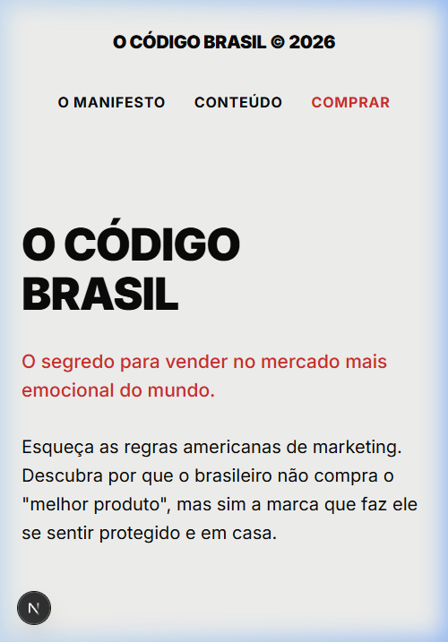
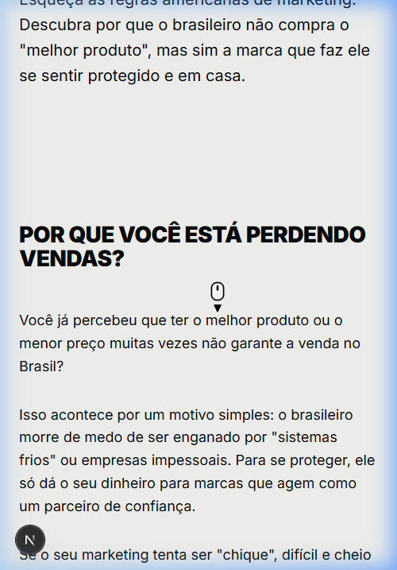
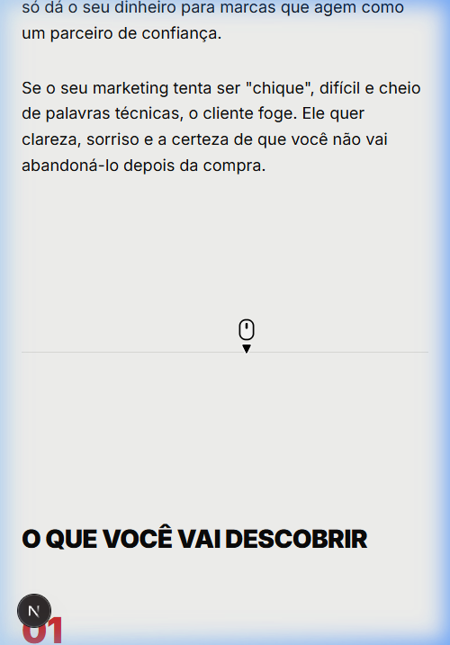
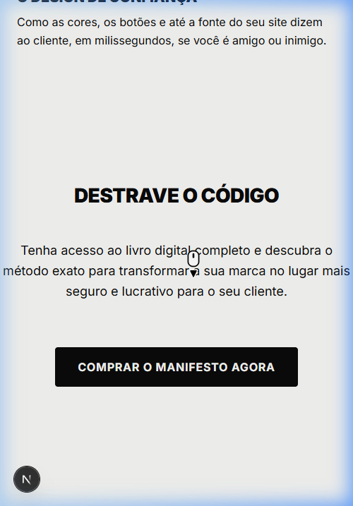

Como o olho do usuário se comporta hoje na sua página:
Botão Imediato: Coloque um botão chamativo logo abaixo do primeiro texto.
Respiro Visual: Quebre os textos com imagens ou ícones.
O Botão Final: Transforme o link num botão grande e arredondado (passa conforto e segurança).




O seu texto ativa perfeitamente a "Dor Brasileira": a desconfiança e o Código Cultural do Amparo.
Você vende o "Fim da Frieza" e o "Efeito WhatsApp", mas o design é frio, distante e impessoal (fundo cinza, letras pretas, detalhes vermelhos).
Solução: Aqueça o design. Use tons que remetem a conforto (cremes, off-whites). Adicione rostos humanos. A mensagem precisa ser abraçada pela estética.
Você utiliza bem a Polarização (Inimigo Comum), a Curiosidade e a Segurança.
O brasileiro só entra no restaurante se tiver fila na porta. Você precisa colocar depoimentos reais. Além disso, o "Padrinho" precisa se apresentar: coloque um parágrafo sobre quem é você.
Sua persona é o empreendedor frustrado com jargões (leads, churn) e táticas que não convertem. O tom do texto está excelente e desafiador.